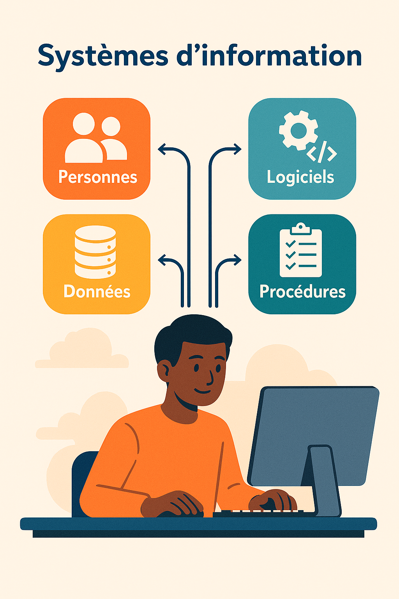

Ce que j'ai découvert pendant mon stage
L'entreprise
TechMinds Alliance est une entreprise de conseils en systèmes d'information. Elle accompagne les entreprises dans leur organisation informatique : réseaux, sécurité, sites web, serveurs, gestion des données, etc.
Mes missions pendant la semaine
- Découvrir ce qu'est un système d'information
- Comprendre comment fonctionnent les réseaux informatiques
- Comprendre le web et internet
- Étudier les bases de la cybersécurité
- Créer un mini site web complet en HTML et CSS
- Observer le fonctionnement d’une entreprise informatique
Ce que j'ai appris
Durant la semaine, j’ai appris que l’informatique ne se limite pas aux ordinateurs. Un système d’information regroupe aussi les personnes, les logiciels, les données et les règles d'organisation. J’ai vu que la sécurité informatique est essentielle pour protéger les entreprises des pirates, virus et arnaques en ligne.
J’ai également appris à créer un site web, comme celui-ci, en utilisant du code HTML et CSS. C’était ma première expérience dans le développement web.
Ce que j’ai préféré
Ce que j’ai le plus apprécié pendant ce stage est ____________________________ (ex : créer mon site web, comprendre les réseaux, travailler dans un vrai bureau…)